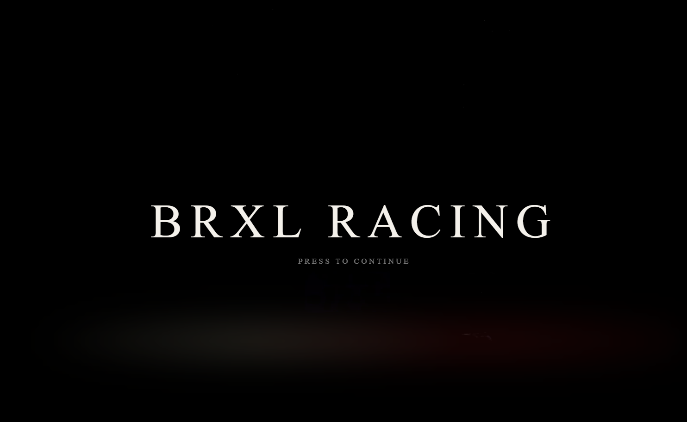
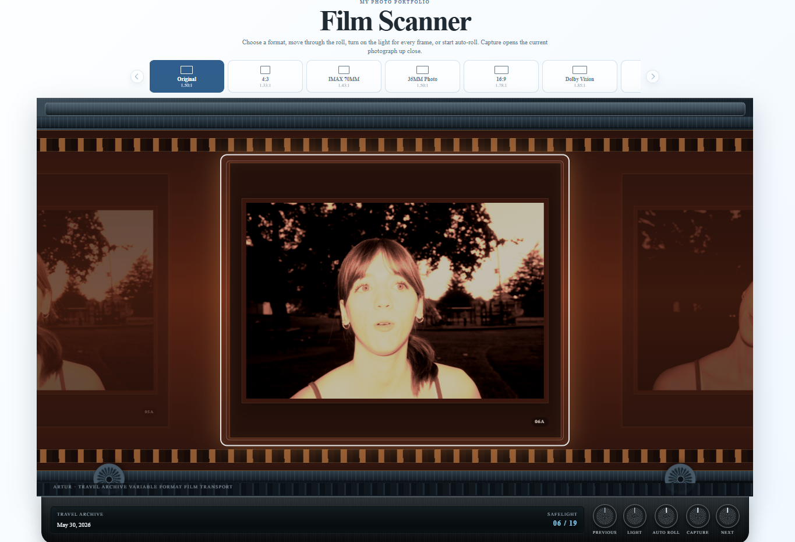
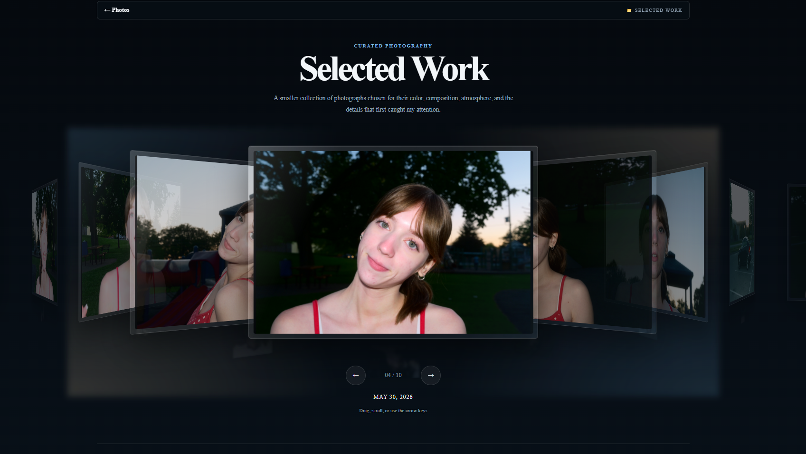
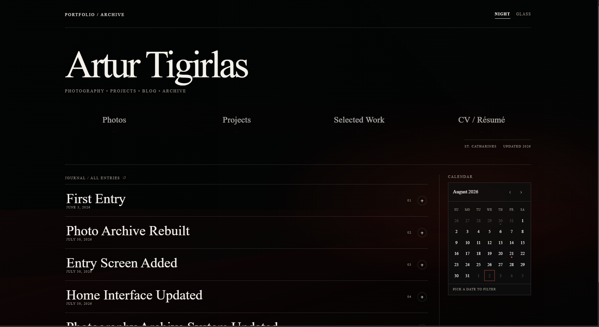
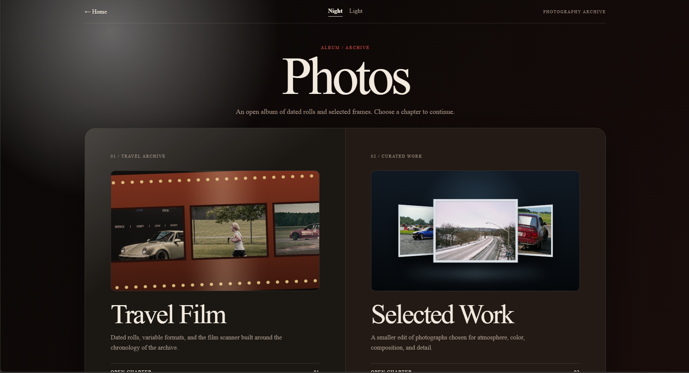
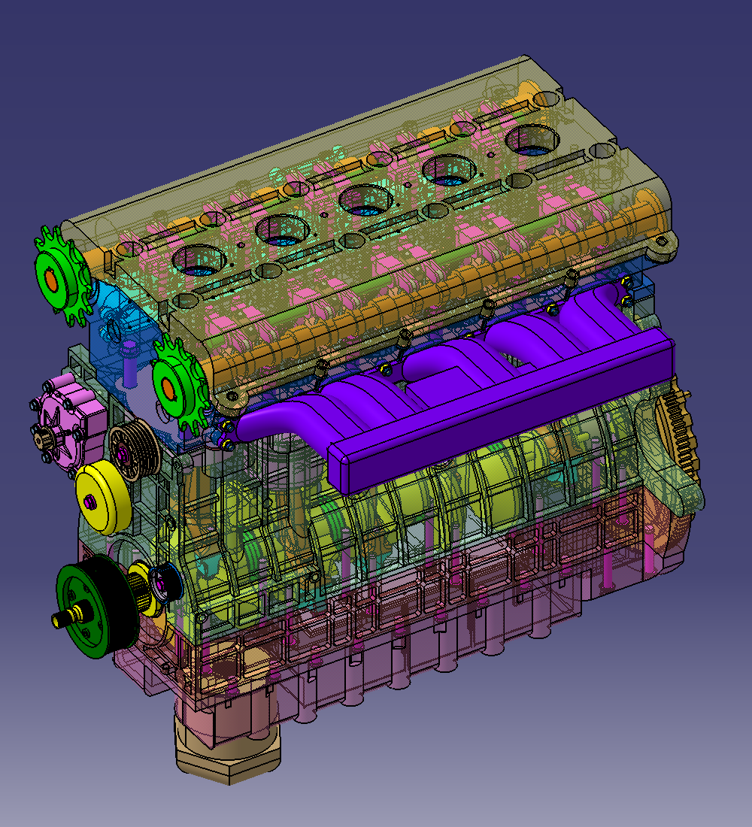
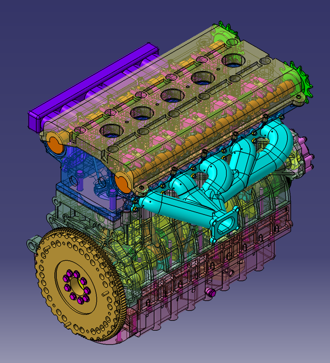
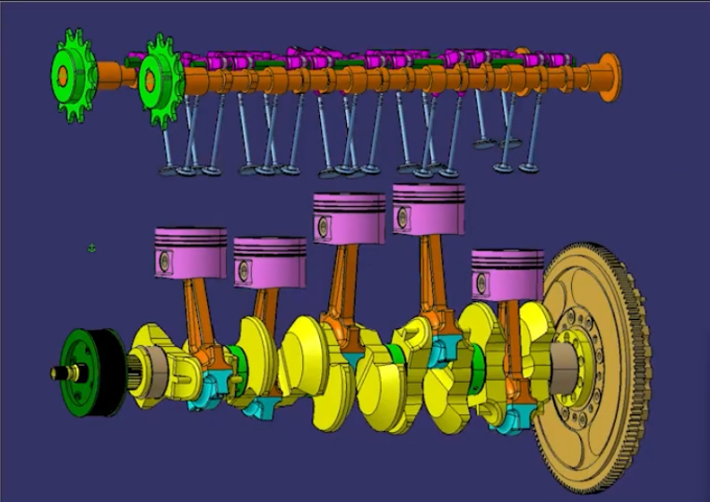
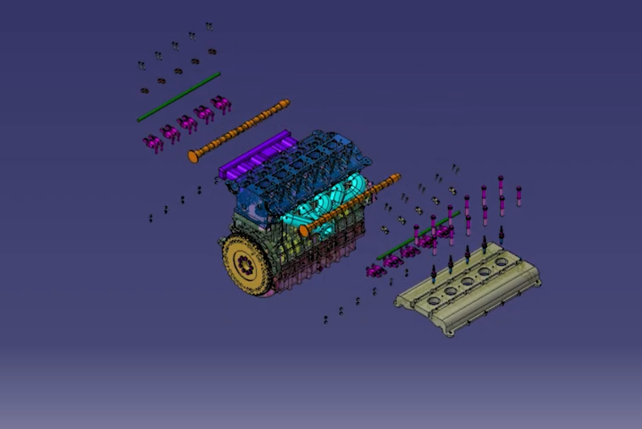

Projects
A scrolling journal of websites, films and visual experiments. Open a project, move through its files, then read the notes behind it.
Scroll to exploreBRXL Racing
A cinematic entry screen built around an edited night-drive film, warm headlight bloom and game-menu typography.

Project note 01
An entrance before the archive.
The goal was to make the website feel entered rather than simply loaded. A looping automotive film became the first screen, while the title, grain and flash transition turned it into a short interactive sequence.
Photography Archive
A shared photography archive built around one reusable photo library, grouping the days I went out shooting, walks, trips and events I attended across a film-scanner interface and a curated selected-work stage.


Project note 02
One photo library, multiple ways to explore it.
The photography archive was rebuilt around one shared library for the different days I went out shooting, from casual walks and trips to car shows, track days and other events. A Python updater scans the photo folders and generates the shared data used by Selected Work, Travel Film and the individual event pages.
- Organized photographs by each day or outing and generated shared metadata including image paths, dates, original event names and stable event matching keys.
- Built individual photo-set pages with responsive masonry galleries, mobile two-column layouts and click-to-enlarge lightboxes.
- Updated Selected Work to combine event metadata with scanned photographs, remove duplicate entries and sort the Photo Journal by date.
- Expanded the Travel Film interface so every event becomes a scrollable film roll, ordered by date while keeping the original scanner interaction.
Personal Website
A personal archive with two visual states: a cinematic Night view and a lighter glass interface.


Project note 03
A cleaner home for everything else.
The home page keeps the same information structure while switching between two moods. Night continues the entry screen’s visual world. Glass turns the same archive into a brighter, softer interface.
Inline-5 Volvo Engine Model
A team-based reverse-modeling and assembly project completed in CATIA V5, covering major engine components, assembly constraints and initial kinematics.




Project note 04
Reverse-modeling a complete inline-five engine.
Collaborated in a team to reverse-model and assemble a complete inline-5 Volvo engine in CATIA V5 using reference models, part drawings and assembly constraints.
- Modeled and refined the engine block, engine base, crankshaft, flywheel, plain bearing crank, intake camshaft and exhaust camshaft.
- Set up initial kinematics for the valve system and piston orientation, correcting alignment issues to improve motion accuracy and fitment.
- Verified part fitment, assembly accuracy and component alignment while assisting teammates with deadline-critical revisions.
- Helped coordinate meetings, track part completion and support final integration, contributing to a final project grade of 99.5%.